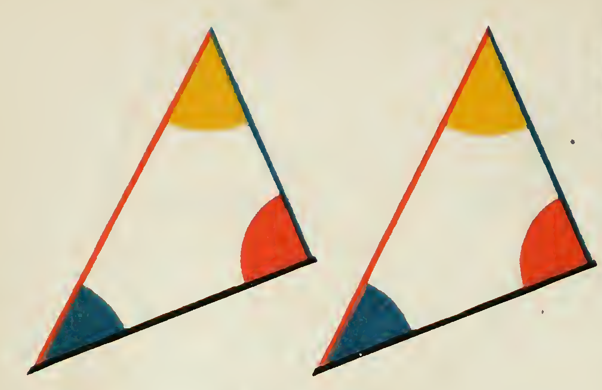

Proposition I.4 — Side-Angle-Side Congruence¶
Book I, Proposition IV. Theorem (Pickering p. 4 · G.90)
If two triangles have two sides of the one equal to two sides of the other, each to each, and have likewise the angles contained by those sides equal to one another, they shall have their bases equal, and the two triangles shall be equal, and their other angles shall be equal, each to each.


Given. Two triangles having equal, equal, and contained apex angles equal.
Demonstration. Superposing the first triangle upon the second so that equal and coincide ([C.N.4]), coincides, whence bases coincide (Simson Axiom X),
∴ equals its twin, are equal, and are equal. Q.E.D.
See Commentary on Proposition I.4.